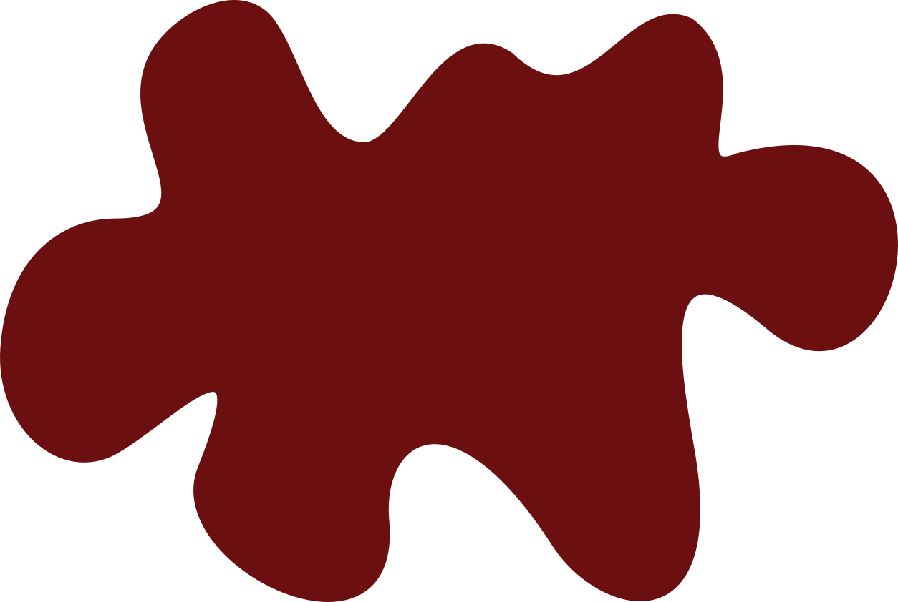

Вино — это алкогольный напиток, получаемый
в результате естественного брожения виноградного сока,
при котором дрожжи перерабатывают сахара винограда
в этиловый спирт и углекислый газ.
Основной продукт в вине — это виноград.
Для создания вина виноград перебирают, очищая от мусора и веточек, затем дают для получения сока (сусла).


В мире существует огромное разнообразие сортов винограда. Международный каталог VIVC насчитывает около 23 тысяч зарегистрированных разновидностей.
Существует 6 основных видов вина, которые классифицируются по цвету, технологии производства, содержанию сахара и крепости.
К ним относятся: красные, белые, розовые, игристые, десертные и крепленые вина. Основные различия между ними кроются в используемых сортах винограда, длительности контакта с кожицей винограда и особенностях процесса брожения.
Количество ходов:
0
Количество найденных пар:
0
